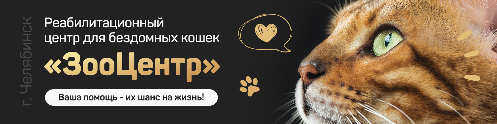

Причины забрать котика!
 Разнообразие выбораВ приютах очень много самых разных животных и все они уникальны: разного размера, окраса, часто можно найти породистых животных, которые раньше были домашними, или невообразимые смеси, которых не найдешь больше нигде. Если вы хотите по-настоящему единственное животное в своем роде - вам в приют!
Можно выбрать друга по характеруВаш питомец проживет с вами 15-20 лет и именно с ним вы будете проводить свободное время. Поэтому выбирая домашнее животное важно учитывать не только внешность, но и характер питомца. Как и люди, все собаки и кошки - это в первую очередь личности со своими предпочтениями и уникальными чертами. Есть собаки, которые с удовольствием проведут выходной с вами на диване за сериалом, а есть спортивные непоседы, которым нужно проходить по 15-20 км в день! Есть котики, которые обожают сидеть на руках, а есть те, кто предпочитают равноправие и независимость #сильныекотики :) И это вы сможете узнать только, познакомившись получше. Узнать особенности характера и пообщаться с понравившимся животным в приюте вы можете не спеша, несколько раз приехать к нему перед принятием решения. Для каждого из нас есть идеальный компаньон, с которым будет комфортно вместе, и скорее всего, вы сможете найти такого в приюте.
Никаких "детских неожиданностей"В приютах можно выбрать животное любого возраста. От крохотных щенков и котят до мудрых и скромных старичков. Помимо того, что щенки и котята - это супер мило, это еще и супер нагрузка. Если вы хотите оградить себя от процесса воспитания маленького щенка или котенка, продолжительного обучения его манерам, смен мебели и очень регулярных уборок, вы можете выбрать взрослое животное, со своим устоявшимся характером и привычками, с которым не будет детских сюрпризов и хлопот. Но щенки и котята тоже есть в приюте.
Информационная поддержкаЗабирая животное из приюта, помните, что вы никогда не останетесь наедине с вопросами по содержанию животного. Сотрудник приюта или куратор животного обязательно вам поможет, окажет персональную поддержку, рекомендует проверенного ветврача или специалиста по поведению и даст совет. Приюты заинтересованы в том, чтобы их "выпускники" и их хозяева жили долго и счастливо, поэтому на их поддержку вы всегда сможете рассчитывать.
Взять из приюта - этичнее, чем купитьПродажа животных - огромный бизнес, в котором, к сожалению, цель часто оправдывает средства. Системы лицензирования заводчиков в нашей стране пока нет и определить, что ваш котенок или щенок и его родители содержались в хороших условиях, бывает достаточно сложно. Забирая животное из приюта вы можете быть точно уверены, что вы взяли питомца из этичного источника и при этом ни один котик не пострадал :)
Финансовые затратыЕсли вы не планируете становиться заводчиком, выступать на выставках или просто хвастаться стоимостью дорогого породистого кота или собаки, то оставьте лучше деньги на отпуск, а за питомцем езжайте в приют. Животных из приютов отдают бесплатно, но в любом случае вам необходимо будет подготовиться к приезду питомца. Купите корм, лежанку, миски, поводок (для собаки), переноску и лоток (для кошки) и, как и для любого животного, нужно быть готовым оплачивать ветеринарные процедуры.
Спасение двух жизнейЗабирая животное из приюта, вы спасаете сразу две жизни, так как освободится место для спасения еще одного хвостика, который оказался в беде. Когда вы берете животное из приюта, вы помогаете уменьшить число бездомных кошек и собак в нашей стране. Более того, своим примером вы показываете другим людям, что взять животное из приюта — это не страшное, а очень приятное доброе дело.